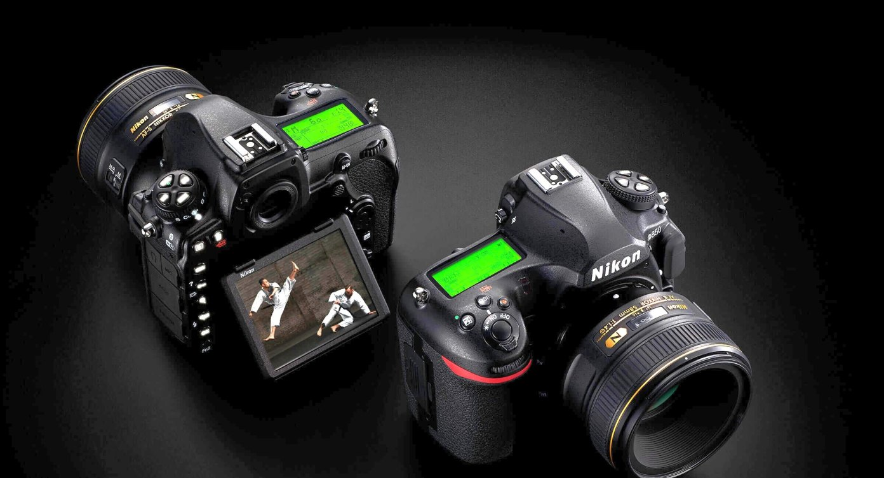

SFESIFIKASI KAMERA NIKON
BERIKUT ADALAH SFESIFIKASI KAMERA NIKON
sfesifikasi kamera nikond3500 :
Kamera ini telah menggunakan sensor CMOS 24 MP APS-C tanpa adanya Optical Low Pass filter yang hadir dengan dukungan ISO 100 hingga ISO 25600,
salah satu yang menurut kami menari dari kamera Nikon D3500 ini kemampuannya untuk bisa menangkap objek pada kecepatan 5 fps tanpa henti dan merekam video pada kualitas gambar Full-HD.
sfesifikasi kamera Nikon D3400 :
Pihak Nikon telah menjejalkan sendor kamera CMOS berkemampuan 24,2 megapiksel
sehingga kamera Nikon D3400 mampu menghasilkan ganmbar yang lebih berkualitas. Selain itu kamera ini juga telah dilengkapi dengan fitur fokus otomatis 11 titik serta mampu menghasilkan video berkualitas 1080p pada kecepatan 60 fps.

sfesifikasi kamera nikon Nikon D850 :
Kamera Nikon D850 ini memiliki kemampuan resolusi hingga 45,75 megapiksel tanpa adanya low pass filter,
selain itu kamera ini memiliki rentang ISO mulai dari 64 hinga 25600 sehingga kamera ini menjadi rekomendasi buat kamu yang ingin memiliki kamera DSLR terbaik.
Back